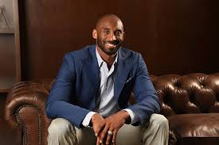

.jpeg)
The crash resulted in a fire on the scene in the upscale suburb of Calabasas.
By Abdalla Hussein
27 January 2020, 17:56
Kobe Bryant, the 18-time All-Star who won five NBA championships and became one of the greatest basketball players of his generation during a 20-year career with the Lakers, died in a helicopter crash on Jan. 26, 2020. He was 41. Also killed in the crash was Bryant’s 13-year-old daughter, Gianna, and seven others who were on board the aircraft.
Bryant became one of the NBA’s most popular players and the face of the Lakers during his career. Winning a record four NBA All-Star Game MVP awards, he was the overall league MVP in 2008, a two-time NBA scoring champion and 12 All-Defensive selections.
He teamed with Shaquille O’Neal in a combustible partnership to lead the Lakers to NBA titles in 2000, 2001 and 2002. He later teamed with Pau Gasol to win two more titles in 2009 and 2010.
A two-time Olympic gold medalist with the dominant U.S. team, Bryant retired in 2016 after scoring 60 points in his final NBA game. In December 2017, the Lakers hung banners retiring his No. 8 and No. 24 jerseys in the Staples Center rafters in an unprecedented double honor.
Vanessa Bryant, in a statement, thanked everyone for their outpouring of support and announced the formation of a fund to help the other affected families. Kobe and Gianna were buried on Feb. 7 in a cemetery near the family’s Southern California home. Additionally, the Lakers set a public memorial service for Kobe and Gianna on Feb. 24.